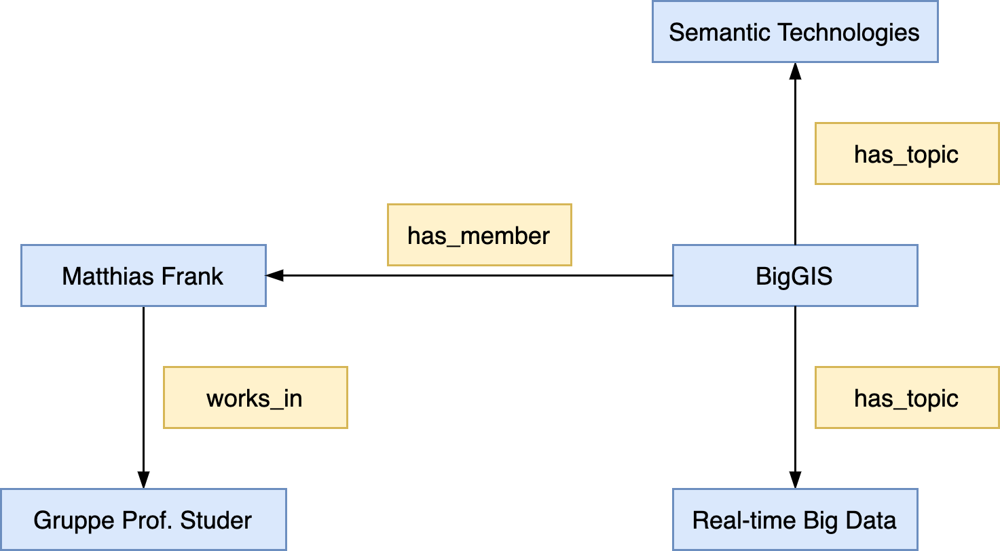
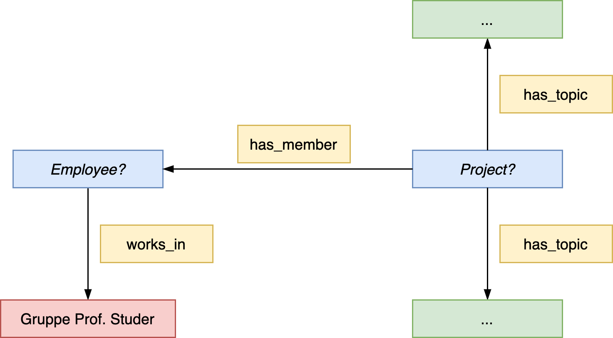

Semantische Suche
SMW verfügt über eine eigene Anfragesprache
- Anlehnung an Wiki-Syntax
- interne Umsetzung der Anfragen in Abfragen für den internen Speicher (z.B. SQL bei Verwendung von MySQL als internen Speicher)
Formale Semantik der Anfrage
- durch Abbildung in OWL-DL-Klassenkonstrukte gegeben
~> d.h. eine Anfrage ermittelt Instanzen einer entsprechenden OWL-Klasse - Nutzung der Anfragesprache auf Spezialseite oder in inline queries
Einbindung in Wiki-Seiten
- Anzeige der Abfrageergebnisse auf der Wiki-Seite
- stets aktuell
Polynomielle Komplexität der Anfragebeantwortung
- Anfragesprache unterstützt daher (wie auch OWL DL) keine benannten Variablen
(Beispiel: Personen, die in Stadt_x geboren wurden und in Stadt_x gestorben sind) (mindestens NP-hart)
How to Formulate Query Conditions
Example
Example
The following domains are modelled in a Semantic MediaWiki
“A research group has a number of employees being members of it. These employees work in different project where each project has different topics it is concerned with.”
Question:
How can we satisfy the information need of displaying all the research topics a research group’s members are associated with through their project work on the research group’s wiki page?
…or in other words
Which topics are a research group working on?1
How can we model and satisfy this information need in Semantic MediaWiki?
First consider the structural composition of the data model used to represent an universe of discourse (or an excerpt of it).
For example:
 An excerpt of the previous example modelled as conceptual SMW graph
This graphical representation serves as basis for the formulation of query conditions.
~> Therefore, think of query conditions as graphs with conditional node values.
~> Also consider the structural semantics of involved elements.
 An illustration of the query graph for the previous example
Consider the following conceptual model semantics:
- yellow boxes represent properties;
properties need to be pre-determined in an #ask query, i.e., you can, e.g., not ask which properties exist between to pages in the main namespace. - the red box represents a pre-determined wiki page in the main namespace
- the blue boxes represent query variables that are to be filled with the values in the course of evaluating the query conditions
- the green boxes are the results returned by processing the query and that are being displayed.
Note
Please note
The previous example represents a more sophisticated query (in technical terms) in which results from an inner query need to be embedded in an outer query.
- In order to determine the inner and outer query interpret the query graphs as projects with specific employees as members.
- ~> Then it becomes clear which query must be embedded into the outer query, ie., which query conditions must constitute the inner query and which conditions the outer query.
Note
Summary
As a consequence, when formulating a query in Semantic MediaWiki, always consider the structural semantics (ie., how pages are linked togehter via properties) of involved vertices and edges.
-
Assuming that the topics information is modelled on the project pages ↩